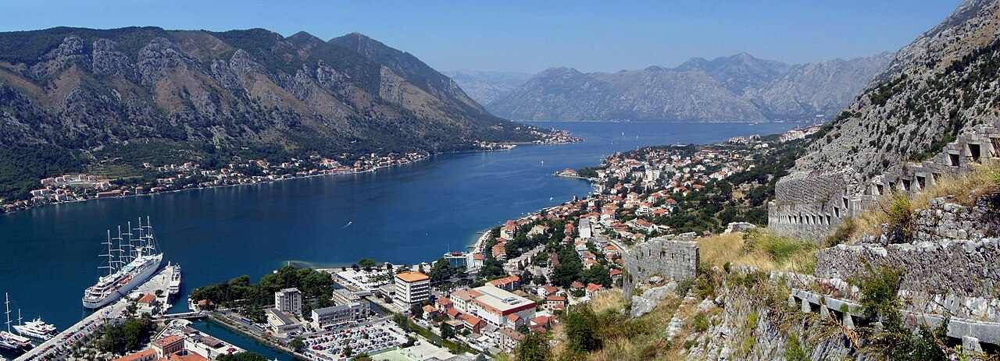

Черногория

Черногория влезает в один кадр и не мешает себе: бухта Котор — «самый южный фьорд Европы», где горы сходятся в воду отвесно, а город внутри колец крепостных стен лежит как в ладони. Котор: старый город с улицей в один аршин шириной, кошки на каждом подоконнике и крепость Св. Ивана — 1400 ступеней вверх; на вершине дыхание сбивается дважды: от подъёма и от вида. Пераст — за ленивое утро: два рукотворных острова, один из которых насыпан из камней кораблей. Выезд серпантином на Ловчен — перпендикулярные повороты с видом на страну целиком: горы, бухта, Адриатика в дымке. Будва даёт пляжи и рынки со спелыми гранатами; Свети-Стефан выглядит так, что вы поверите любому рассказу о его венецианском прошлом. Еда — морская: устрицы в бухте, рыба на гриле, вино из автохтонных сортов вранац и крстац. Сезон мягкий: в октябре вода ещё тёплая, а бары — свободные.
Что знать перед поездкой
- Крепость Котора — 1400 ступеней к 8 утра
- Серпантин Ловчена — с остановками на виды
- Устрицы в бухте — свежее всего на утро